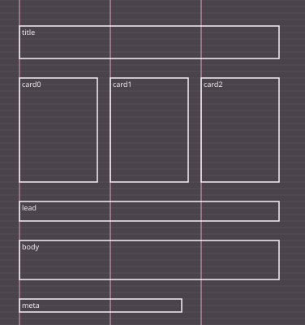
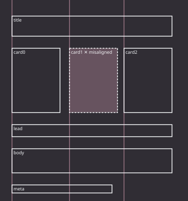

Measure the grid.
Don’t assume it.
A layout grid is a claim. This tool takes measured element coordinates (px, pt or mm, at any zoom, or boxes from an SVG), tests every candidate base unit against the evidence, and only exports spacing, column and type-scale tokens the numbers support. No default 4/8pt. Fewer than three elements or column guides is reported as insufficient, never as a grid.



